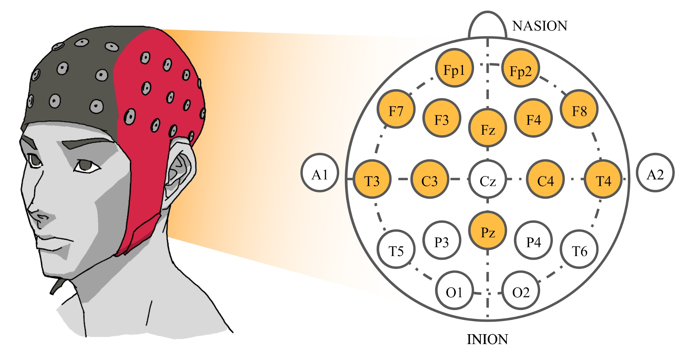

About
Hello! My name is Panayu Keelawat. I'm studying M. S. in Computer Science at UC San Diego. My research interests include Computer Vision and Machine Learning.
I received my B. Eng in Computer Engineering from Chulalongkorn University, Thailand, in 2019.
I worked with Prof. Boonserm Kijsirikul during my undergraduate degree focusing on machine learning with brainwaves.
Apart from work, I enjoy jogging. Also, I'm a badminton lover.
You can download my C.V. from this link.
Research
EEG-Based Emotion Recognition Using Deep Learning
Subject-Independent Emotion Recognition During Music Listening Based on EEG Using Deep Convolutional Neural Networks | [ Publisher ]
Panayu Keelawat, Nattapong Thammasan, Boonserm Kijsirikul, Masayuki Numao
IEEE International Colloquium on Signal Processing & Its Applications (CSPA), 2019
Spatiotemporal Emotion Recognition using Deep CNN Based on EEG during Music Listening | [ arXiv ]
Panayu Keelawat, Nattapong Thammasan, Masayuki Numao, Boonserm Kijsirikul
arXiv preprint arXiv: 1910.09719